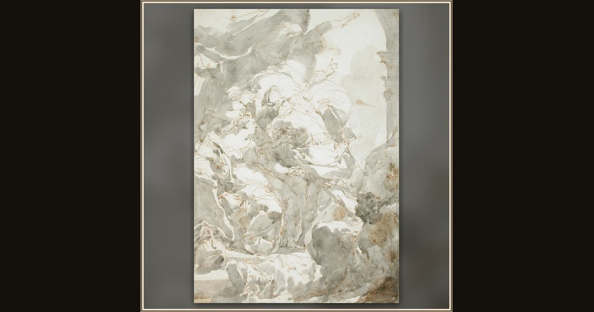

Circe, Ulysses, and Mercury
Gaetano Gandolfi · c. 1766 · Los Angeles County Museum of Art · Los Angeles, USA
The god Mercury swoops down to warn Ulysses about Circe's tricks — and to hand him the magic herb that keeps her spells from working. Explore its place in Book X of the Odyssey.